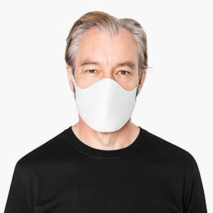

Dr.
Dr.
Dr.
Bala Ganesh Gopurala
He is a board-certified oncologist who brings more than 20 years of medical experience to The Oncology Institute of Hope and Innovation.
010-020-0340
Meet Dr. Bala Ganesh Gopurala
A Medical Director, well-respected Board-Certified Medical Oncologist, and a well- trained Hematologist and Internist with over a decade and half of clinical experience. Practices patient-centered approach with integration of Medical Services and Preventive Oncology. Recognized physician leader, a former class president, and head of numerous committees and task force. Accomplished innovator and a change-agent with excellent communication skills. Well-versed in EHR and noted expert in evidence-based medicine. Founded and ran a successful management service company and worked independently as well as in large interdisciplinary teams. Excellent skills in creating wellness programs, quality assurance programs, strategies, and implementation plans as well as in training of medical professionals. Proven ability in developing supportive care, survivorship, cancer prevention, integrative oncology programs, utilization review, and working with employee groups, managers, unions, and HR personnel. Excellent presentation, analytic, and computer skills. Recognized as a mentor, a leader, and a visiting professor.
24 Years
of Experiences
Work Experience
July, 2019 - Present
18433 Roscoe Blvd Suite 106, Northridge, CA 91325. A Physician Leader helping other colleagues to navigate through the care pathway and management designs through National Comprehensive Cancer Network and other national guidelines.
July, 2021 - Present
High Value Cancer Care Committee at The Oncology Institute of Hope and Innovation: 8000 Studebaker Rd #800, Cerritos, CA 90703.
November, 2021- Present
Pathology and Lab Committee at The Oncology Institute of Hope and Innovation: 8000 Studebaker Rd #800, Cerritos, CA 90703.
December, 2020 - Present
Physician Mentorship Committee at The Oncology Institute of Hope and Innovation: 8000 Studebaker Rd #800, Cerritos, CA 90703. Helped to form and develop.
July, 2021 - Present
8000 Studebaker Rd #800, Cerritos, CA 90703. Committee member of Chemotherapy and other therapy Protocols orders at The Oncology Institute of Hope and Innovation.
January, 2022 - December, 2022
PEC (Physician Executive Committee). Actively involved in the wellbeing of medical care providers, patients, and families, as well as the overall quality and experience of the members. 18000 Studebaker Rd #800, Cerritos, CA 90703.
February, 2018 - December, 2021
11550 India Hills Rd, St 330, Mission Hills, CA-91345. Physician Leader and Medical Director in North LA County Region at The Oncology Institute of Hope & Innovation, actively involved in cancer and blood disorder management with a patient and family-centered approach in collaboration with referring and primary care providers to improve overall well-being.
October, 2019 - December, 2021
PEC (Physician Executive Committee). Actively involved in the wellbeing of medical care providers, patients, and families, as well as the overall quality and experience of the members. 18000 Studebaker Rd #800, Cerritos, CA 90703.
December, 2020 - December, 2021
18000 Studebaker Rd #800, Cerritos, CA 90703. Founding Secretary of PEC (Physician Executive Committee) at The Oncology Institute of Hope and Innovation, actively involved in committee formation, meeting minutes, operations, and communication.
July, 2021 - December, 2022
Palliative Care Committee at The Oncology Institute of Hope and Innovation: 8000 Studebaker Rd #800, Cerritos, CA 90703.
July, 2017
2175 Rosaline Ave, Redding, CA 96001. Attending Physician at Mercy Medical Center.
August, 2017
Attending Physician at Rideout Memorial Hospital: Marysville, CA, 95901.
September, 2017 - December, 2017
602, Indiana Ave, L Lubbock, TX- 79425. Attending Physician at Southwest Cancer Center.
December, 2010 - July, 2017
Medical Director at Shelby-Chilton Hematology and Oncology: LLC, 1024 1st St N, Alabaster, AL- 35007. Actively involved in patient management in collaboration with primary care providers. Administers Patient Centered Approach utilizing the integrative medical services to address presenting issues as well as improves overall well-being of persons.
August, 2008 - November, 2010
1024 1st St N, Alabaster, AL- 35007. Attending Physician at Central Alabama Hematology and Oncology.
August, 2008 - November, 2010
Worked as attending Physician for Lusi F. Pineda, M.D. P.C.: 1909 Laurel Road, Vestavia, Alabama 35216.
July, 2006 - July, 2008
Brookwood Medical Plaza, 513 Brookwood Blvd, #275, Birmingham, AL 35209. Attending Physician at Alabama Hematology and Oncology Associates. Actively involved in cancer and blood disorders management in collaboration with other referring and primary care provider, specialty providers as well as hospitals. Well respected in the community.
Postgraduate Training
MBA – Conscious Leadership
Alfred Ford School of Management, and IPE Management School Paris
11 Rue Erard, 75012 Paris, France
03/2022 - Present
Essentials of Palliative Care
Stanford University School of Medicine
291 Campus Drive, Stanford, CA 94305
03/2022 - Present
Healthcare Leadership Management for Physicians
University of Texas, Dallas and Texas Medical Association
Austin, TX
12/2015 - 2016
Clinical Fellow
Division of Hematology and Oncology School of Medicine at University of Alabama at Birmingham
Birmingham, Alabama, United States
06/2003 - 07/2006
Research Fellow
Hematology Research Training Program National Institute of Health, Division of Hematology, and Oncology at School of Medicine: University of Alabama at Birmingham, Alabama, United States.
11/2002 - 06/2004
Resident
Internal Medicine at Carraway Medical Center Birmingham, Alabama, United States.
11/2000 - 10/2002
Intern
Internal Medicine at Carraway Medical Center: Birmingham, Alabama, United States.
10/1999 - 09/2000
Research Scholar
Division of Hematology and Oncology, School of Medicine at University of Alabama at Birmingham: Birmingham, Alabama, United States.
06/1998 - 09/1999
Research Scholar
Division of Anatomic Pathology, School of Medicine at University of Alabama at Birmingham: Birmingham, Alabama, United States.
06/1996 - 05/1998
Visiting Scientist
Division of Hematology and Oncology, School of Medicine at University of Alabama at Birmingham: Birmingham, Alabama, United States.
04/1995 - 05/1996
House Staff
General Hospital: Port of Spain, Trinidad, West Indies.
04/1994 - 03/1995
Resident Medical Officer and Assistant Director
Medical Research (Voluntary), V.R. Hospital and Research Institute, Tirupati, India.
03/1993 - 04/1995
Achievements and Awards
- 2016-2017 Leadership Class, City of Southlake, Texas, United states
- 2016 Physician Leadership College, Texas Medical Association, Austin, Texas United States
- 2015 Inducted into International Association of Healthcare Professionals New York, New York, United States.
- 2015 Alabama's Top Oncologist, International Association of Oncology, New York, New York, United States.
- 2011-2015 Member, Inter-specialty Council, Medical Society of Alabama, Montgomery, Alabama, United States.
- 2011 Governmental Affair, U.S. Congress Representation, Medical Society of Alabama, Montgomery, Alabama, United States.
- 2010 America's Top Oncologist, Consumer Research Council of America, Washington DC, United States.
- 2009 Governmental Affair, U.S. Congress Representation, American Association of Community Oncology, Washington, DC, United States.
- 2005 National Comprehensive Cancer Network Fellows Recognition Award, Jenkintown, Philadelphia, United States.
- 2005 Physicians Education Resource Scholarship Award, Dallas, Texas, United States.
- 2004 Fellows Travel Grant Award, for ASCO Annual Meeting, Orlando, Florida, United States.
- 2003 Scholar Award, for a Course on Holistic Approaches in Health and Wellness, Institute of Complementary Therapies, Bangalore, Karnataka, India.
- 2002 Research Scholar Grant, Hematology Research Training Program, National Institute of Health, Division of Hematology and Oncology, School Medicine, University of Alabama at Birmingham, Birmingham, Alabama, United States.
- 2002 Resident of the Year Award, Department of Internal Medicine, Carraway Medical Center, Birmingham, Alabama United States.
- 2001 Dr. Glen Cobb’s Award for Outstanding Performance, Department of Internal Medicine, Carraway Medical Center, Birmingham Alabama, United States.
- 2000 Dr. Glen Cobb’s Award for Outstanding Performance, Department of Internal Medicine, Carraway Medical Center, Birmingham, Alabama, United States.
- 1999 Chief Resident’s Award for Outstanding Performance, Department of Internal Medicine, Carraway Medical Center, Birmingham, Alabama, United States.
- 1999 United States Permanent Residency in an Outstanding Scientist Category.
- 1998 Chancellor’s Commendation for Outstanding Achievements, Chancellor, University of Alabama System, Birmingham, Alabama, United States.
- 1998 Inducted into the International WHO’s WHO of Professionals, United States.
- 1997 Inducted into the International WHO’s WHO of Professionals, United States.
- 1997 Outstanding Young Investigator Award and Travel Grant, American Health Research Institute, Birmingham, Alabama, United States.
- 1997 Award for Outstanding Performance in Wellness Program, University of Alabama at Birmingham Medical Center, Birmingham, Alabama, United States.
- 1995 Outstanding Physician and Travel Award to attend International Commonwealth Medical Council Congress, Andaman Commonwealth Countries Medical Council, Trinidad, West Indies.
- 1993 Medical Research Training Award, Caribbean Medical Research Council Trinidad, West Indies.
- 1993 Judge, Science Fair, Jyothi Ram School, Chittoor, Andhra Pradesh, India.
- 1992 Judge, Scientific Studies Contest, Diabetic Research Institute, Tirupati, Andhra Pradesh, India.
- 1992 State Coordinator’s Commendation for Outstanding Services at School Health Camps, State Coordinator, School Health Services, Hyderabad, Andhra Pradesh, India.
- 1992 Team Leader, School Health Camps, Cuddapah District, Cuddapah, Andhra Pradesh, India.
- 1992 Outstanding Achievement Award, Oral Presentation of Scientific Research, 33 State Annual Meeting, Indian Medical Association, Tirupati, Andhra Pradesh, India.
- 1991 Award of Excellence for Outstanding Contributions to Community Health Activities, Indian Junior Chambers, Tirupati, Andhra Pradesh, India.
- 1990 Award of Excellence for Outstanding Community Health Activities, Lions Club, Kurnool, Andhra Pradesh, India.
- 1988 Award of Excellence for Community Health Services- Diabetic Camps, Rotary Club, Puttur, Andhra Pradesh, India.
- 1984 State Merit Scholarship Award for Outstanding Academic Performance, Sri Venkateswara University, Tirupati, Andhra, Pradesh, India.
Our Patients
Best Health Care
Phasellus ligula ante, tempus ac imperdiet ut, mattis ac nibh. Orci varius natoque penatibus et magnis dis parturient montes, nascetur ridiculus mus.

Doctor cares everyone!
Donec in elementum orci, nec posuere ligula. Quisque vulputate diam et ullamcorper ullamcorper. Pellentesque vestibulum neque at leo fermentum mattis.
Great services!
Vestibulum ante ipsum primis in faucibus orci luctus et ultrices posuere cubilia curae; Donec sit amet velit vitae purus aliquam efficitur.

Best Advices
Integer posuere erat a ante venenatis dapibus posuere velit aliquet. Maecenas faucibus mollis interdum. Donec ullamcorper nulla non metus auctor fringilla.